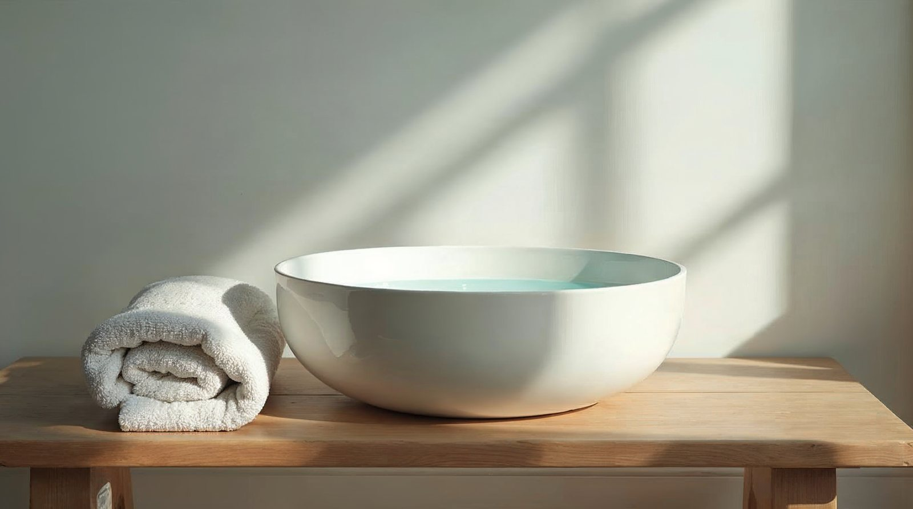
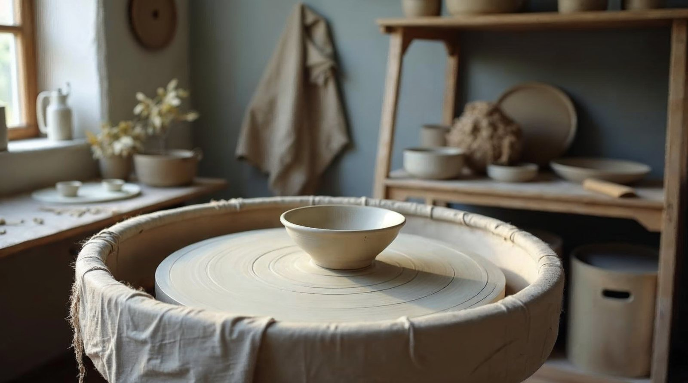

이종호 한의사 감수좋은꿈참사랑한의원 대표원장 (한의사 면허번호 19769)발행 2026-11-23 · 수정 2026-11-26
이 글의 차례
- 왜 이런 불편이 생길 수 있나요
- 먼저 이렇게 여쭙니다
- 일상에서 먼저 해 볼 수 있는 것
- 한의원에서 함께 살필 수 있는 경우
- 얼마나 지켜보고 언제 진료를 받으면 좋을까요
- 이런 경우를 예로 들 수 있습니다
- 스스로 점검해 보세요
- 처음 오시면 이렇게 진행됩니다
- 이렇게 기록해 오시면 상담이 쉬워집니다
- 아픈 마디에 따라 살필 점이 어떻게 다를까요?
- 왜 50대 전후에 손가락 마디가 예민해질까요
- 손일 종류별로 이렇게 바꿔 보세요
- 집에서 해 볼 수 있는 손 풀기
- 아침 뻣뻣함은 어떻게 기록하고 다룰까요?
- 손을 따뜻하게 지키는 생활 요령
- 한의원 치료는 어떤 순서로 정하나요?
- 가족과 일을 나누는 것도 방법입니다
- 진료를 받는 동안에는 이렇게 이어 갑니다
- 이런 증상은 먼저 확인이 필요합니다
- 관련 글
김장과 요리, 뜨개질과 도자기처럼 손일을 즐기는 분이 많습니다. 손은 쓸수록 유연한 부분도 있지만 같은 동작이 길게 반복되면 마디가 먼저 지칠 수 있어, 아픈 마디와 쓰는 방식을 함께 살펴봅니다.
왜 이런 불편이 생길 수 있나요
- 칼질, 걸레 짜기, 뜨개질처럼 같은 각도로 꽉 쥐는 동작이 반복되면 손가락 마디와 힘줄에 부담이 쌓입니다.
- 50대 전후에는 손가락 끝 마디나 엄지 뿌리 쪽이 뻣뻣해지는 분이 늘어납니다.
- 차가운 물을 오래 쓰면 손이 굳어 같은 일도 더 힘들게 느껴질 수 있습니다.
- 쉬는 간격 없이 몰아서 일하면 다음 날까지 욱신거림이 남기도 합니다.
먼저 이렇게 여쭙니다
- 어떤 손일을 하루에 몇 시간 정도 하시나요?
- 어느 마디가 욱신거리나요? 엄지, 검지, 손목 중 어느 쪽인가요?
- 일을 마친 뒤에 더 아픈가요, 하는 도중에 아픈가요?
- 아침에 손이 뻣뻣한 시간은 얼마나 이어지나요?
- 차가운 물을 쓰는 일이 많으신가요?

일상에서 먼저 해 볼 수 있는 것
- 손일은 한 번에 오래 하지 않고 30분마다 손을 털고 펴 주기
- 손잡이가 굵고 부드러운 도구로 바꿔 손가락 힘을 덜 쓰기
- 차가운 물 대신 미지근한 물을 쓰고 일이 끝나면 손을 따뜻하게 하기
- 손가락을 천천히 펴고 쥐는 동작을 아프지 않은 범위에서 반복하기
- 김장처럼 큰일은 며칠에 나누어 하기
한의원에서 함께 살필 수 있는 경우
- 손일을 하고 나면 마디가 욱신거려 다음 날까지 이어지는 경우 쓰는 방식과 쉬는 간격을 함께 살핍니다.
- 손목과 엄지 쪽까지 뻐근한 경우 팔 전체의 긴장과 자세를 함께 살핍니다.
- 날씨가 추워지면 마디가 시린 경우 활동과 생활 습관을 함께 살핍니다.
좋은꿈참사랑한의원에서는 아픈 마디를 직접 눌러 보고 쥐었다 펴는 동작을 확인하며, 손목과 팔, 어깨까지 이어진 긴장을 함께 봅니다. 필요하다고 판단될 때 침이나 약침 등을 정하고, 귀가 전에는 손일을 나눠 하는 요령과 도구를 바꾸는 방법을 알려 드립니다.
얼마나 지켜보고 언제 진료를 받으면 좋을까요
- 큰 손일을 한 다음 날만 욱신거리고 2~3일 쉬면 가라앉는다면, 손일을 나눠 하며 1~2주 지켜볼 수 있습니다.
- 손일을 줄이고 쉬는 간격을 지켰는데도 2주 넘게 같은 마디가 아프다면 진료를 받아 보시길 권합니다.
- 아침 뻣뻣함이 매일 30분 넘게 이어지거나 점점 길어진다면 지켜보기보다 진료 일정을 잡아 보세요.
- 손가락을 다친 뒤 모양이 변했거나 움직이지 못한다면 영상 검사가 가능한 의료기관을 먼저 찾으세요.
이런 경우를 예로 들 수 있습니다
- 예를 들어 김장철에 사흘 연속 배추를 절이고 양념을 버무린 뒤 엄지 뿌리와 손목이 시큰한 경우, 찬물과 꽉 쥐는 동작이 겹쳤는지, 손목까지 부담이 이어졌는지 함께 살핍니다.
- 예를 들어 뜨개질을 저녁마다 두세 시간씩 하는데 검지 끝 마디가 뻣뻣해진 경우, 바늘을 쥐는 힘과 손목 각도, 쉬는 간격을 직접 재현해 보며 확인합니다.
- 예를 들어 손가락을 굽혔다 펼 때 걸리는 느낌이나 딸깍하는 소리가 함께 있는 경우, 힘줄 주변을 확인할 필요가 있다고 판단되면 초음파로 함께 봅니다.

스스로 점검해 보세요
- 아침에 주먹을 꽉 쥐기 어려운 시간이 있다
- 병뚜껑을 돌리거나 행주를 짤 때 마디가 시큰하다
- 손가락 끝 마디가 예전보다 두툼해 보인다
- 손을 쓰고 난 저녁에 더 욱신거린다
- 찬물에 손을 담그면 마디가 유난히 시리다
- 손가락을 굽혔다 펼 때 걸리는 느낌이 있다
- 양손의 여러 마디가 함께 붓는 날이 있다
마지막 항목에 해당한다면 류마티스내과 진료를 먼저 권합니다. 나머지 항목은 적어 두었다가 진료 때 보여 주시면 이야기를 정리하기 쉽습니다.
처음 오시면 이렇게 진행됩니다
접수 때 복용 중인 약과 영양제, 다른 병원에서 받은 혈액 검사나 X선 결과가 있다면 함께 보여 주세요. 원장은 모든 분의 맥을 먼저 짚고, 맥을 짚는 동안 어떤 손일을 언제부터 얼마나 하셨는지 여쭙니다. 이어서 아픈 마디를 눌러 보고 쥐었다 펴는 동작, 손목과 팔꿈치, 어깨의 움직임까지 확인합니다.
저는 손으로 짚을 때마다 여기가 맞는지 여쭙습니다. 제가 짐작한 자리와 환자분이 손가락으로 가리키는 자리가 조금 다르면 손을 옮겨 다시 봅니다. 아픈 자리를 가장 오래 지켜본 분은 그 손의 주인이기 때문입니다.
힘줄 주변을 눈으로 확인할 필요가 있다고 판단되면 초음파를 함께 봅니다. 오늘 할 치료와 이유를 먼저 설명드린 뒤 진행하고, 치료가 끝나면 집에서 해 볼 손 스트레칭과 도구를 바꾸는 요령, 다음 방문 간격을 정합니다.
평소 쓰는 칼이나 뜨개바늘 같은 도구를 사진으로 찍어 오시면 쥐는 방식을 이야기하기 쉽습니다. 진료시간은 평일 09:30~20:00(점심 13:00~14:00), 토·일·공휴일 09:30~15:00(점심시간 없음)입니다.
이렇게 기록해 오시면 상담이 쉬워집니다
- 아픈 마디 위치(엄지, 검지, 손가락 끝 마디 등)
- 손일의 종류와 하루에 하는 시간
- 아침 뻣뻣함이 이어지는 시간
아픈 마디에 따라 살필 점이 어떻게 다를까요?
손가락이 아프다고 하셔도 어느 마디인지에 따라 짐작하는 방향이 꽤 다릅니다.
- 손가락 끝 마디: 마디가 조금씩 두툼해지고 아침에 잠깐 뻣뻣하다가 풀리는 경우가 많습니다. 50대 이후 흔히 보이는 변화라 쓰는 방식과 쉬는 간격을 함께 봅니다.
- 가운데 마디와 손가락 뿌리 마디: 양손 같은 자리가 함께 말랑하게 붓고 아침 뻣뻣함이 길다면, 손을 많이 써서 생긴 변화와는 결이 달라 염증성 관절 질환 확인이 먼저입니다.
- 엄지 뿌리(손목과 만나는 곳): 병뚜껑 돌리기, 행주 짜기, 단추 채우기처럼 엄지로 집고 비트는 동작에서 아픈 경우가 많습니다.
- 손바닥 쪽 손가락 뿌리: 손가락을 굽혔다 펼 때 걸리거나 딸깍 소리가 나고, 아침에 더 심하게 느끼는 분이 많습니다.
붓는 날의 손 모양은 사진으로 남겨 두면 진찰할 때 참고가 됩니다.
왜 50대 전후에 손가락 마디가 예민해질까요
손가락 마디의 연골과 힘줄은 수십 년 동안 하루에도 수없이 쥐고 펴는 일을 해 왔습니다. 50대 전후에는 그 쓰임이 쌓이면서 마디 표면이 매끄럽지 않게 되거나 힘줄이 지나는 길이 좁아지는 변화가 생기기 쉽습니다.
여성은 폐경을 전후한 시기에 손가락 마디가 뻣뻣하고 시리다고 느끼는 분이 늘어난다는 이야기도 있습니다. 손을 받쳐 주는 손바닥과 팔 근육의 힘이 줄면 같은 일을 할 때 마디에 실리는 부담이 더 커질 수 있습니다.
손일 종류별로 이렇게 바꿔 보세요
- 칼질: 손잡이가 굵고 가벼운 칼을 쓰고, 단단한 채소는 전자레인지에 살짝 데워 부드럽게 한 뒤 썹니다.
- 걸레·행주 짜기: 비틀어 짜기보다 손바닥으로 눌러 짜거나 짜는 도구를 씁니다.
- 뜨개질: 굵은 바늘과 부드러운 실로 바꾸고, 20~30분마다 손을 내려놓고 손가락을 쫙 폅니다.
- 도자기·공예: 흙을 오래 주무를 때는 미지근한 물을 쓰고, 손목을 꺾은 채 누르지 않도록 작업대 높이를 맞춥니다.
- 김장 버무리기: 고무장갑 안에 면장갑을 껴 손을 따뜻하게 하고, 큰 통 대신 작은 그릇에 나눠 버무립니다.
- 휴대폰: 한 손 엄지로 오래 타자를 치지 말고 양손으로 잡거나 음성 입력을 섞습니다.
집에서 해 볼 수 있는 손 풀기
- 미지근한 물에 손을 5분쯤 담근 뒤 손가락을 하나씩 천천히 굽혔다 펴기
- 엄지 끝을 다른 손가락 끝에 차례로 동그랗게 맞대기
- 탁자에 손바닥을 펴 올리고 손가락을 하나씩 들어 올렸다 내리기
모두 아프지 않은 범위에서 천천히 하고, 하고 난 뒤 욱신거림이 더 커지면 횟수를 줄이세요.
아침 뻣뻣함은 어떻게 기록하고 다룰까요?
아침에 손이 뻣뻣한 시간은 진료에서 중요한 단서입니다. 눈을 뜬 뒤 주먹이 편하게 쥐어질 때까지 몇 분이 걸리는지 일주일 정도 적어 보세요. 10~20분 안에 풀린다면 쓰는 방식과 쉬는 간격부터 조정해 볼 수 있고, 30분을 넘기는 날이 늘어나면 앞의 기준대로 진료 일정을 잡아 보세요.
일어나자마자 병뚜껑을 따거나 무거운 냄비를 드는 일은 손이 풀린 뒤로 미루고, 따뜻한 물로 세수하며 손을 천천히 쥐었다 펴는 것부터 시작하세요. 공예나 김장 손질처럼 오래 걸리는 일은 손이 충분히 풀린 낮 시간으로 옮겨 보셔도 좋습니다.
손을 따뜻하게 지키는 생활 요령
몸은 추울 때 몸 중심의 온도를 지키려고 손발 쪽 혈액 흐름을 줄이는 경향이 있습니다. 손이 차가워지면 근육과 힘줄도 움츠러들어, 같은 손일에도 마디가 더 뻣뻣하고 시리게 느껴질 수 있습니다.
- 냉장고와 냉동실 정리는 짧게 끊어서 하고, 얼음이나 언 고기는 맨손으로 오래 만지지 않습니다.
- 겨울 외출 때는 손가락 장갑을 끼고, 손난로는 저온 화상이 생기지 않게 한 곳에 오래 대지 않습니다.
따뜻하게 한 뒤 손이 시원하게 풀리면 지금 손에 맞는 쪽일 가능성이 크고, 오히려 욱신거림이 늘면 멈추는 편이 좋습니다. 마디가 갑자기 붉고 뜨겁게 부은 날에는 데우지 말고, 아래 '먼저 확인' 신호에 해당하는지부터 살펴 주세요.
한의원 치료는 어떤 순서로 정하나요?
진찰을 마치면 아픈 마디와 손목, 팔의 긴장 정도에 따라 침이나 약침을 정하고, 손이 유난히 차고 굳어 있다면 온열 물리치료를 함께 고려합니다. 치료 중 불편하면 바로 말씀해 주세요. 강도와 자리를 조정합니다.
몸 전체의 리듬을 함께 돌보기 위해 한약을 이야기하게 되면, 지금 드시는 약과 영양제를 먼저 확인한 뒤에 정합니다. 다른 병원에서 처방받은 약은 임의로 끊지 마시고 그대로 드시면서 상의해 주세요.
가족과 일을 나누는 것도 방법입니다
김장이나 명절 음식처럼 손이 많이 가는 일은 혼자 다 하려 하지 말고 단계별로 나눠 맡겨 보세요. 배추 절이기와 씻기처럼 찬물과 힘이 많이 드는 단계는 가족에게 맡기고, 간을 보고 양념을 정하는 일처럼 손 부담이 적은 일을 맡으시면 좋습니다.
손이 아프다는 말을 꺼내기 어려워 참고 일하시는 분이 많은데, 어떤 동작이 힘든지 구체적으로 말씀해 주시면 가족도 도울 방법을 찾기 쉽습니다.
진료를 받는 동안에는 이렇게 이어 갑니다
손가락 마디는 쓰지 않을 수 없는 곳이라, 치료를 받는 동안에도 일상 손일은 계속됩니다. 저는 운동 이야기를 할 때도 아예 멈추기보다 하던 강도를 70% 정도로 낮추시라고 말씀드립니다. 다음 날 불편이 늘지 않으면 조금씩 되돌리고, 늘면 그 동작을 잠시 쉽니다.
좋아하는 손일도 같은 방식으로 양을 정해 보시면 좋겠습니다. 김장이나 명절처럼 큰일을 앞둔 시기라면 미리 말씀해 주세요. 그 전후로 진료 일정을 맞추고, 손을 아끼는 순서를 함께 정해 드립니다.
그동안 이 손으로 참 많은 일을 하셨을 겁니다. 좋아하는 손일을 오래 이어 가실 수 있게 같이 방법을 찾아보겠습니다. 다음에 오시면 그사이 어떤 손일을 얼마나 하셨는지, 아침에 주먹이 편하게 쥐어지기까지 몇 분이 걸렸는지부터 여쭙겠습니다.
이런 증상은 먼저 확인이 필요합니다
- 마디가 갑자기 붓거나 붉어지거나 뜨거워진 경우, 열이 나는 경우
- 여러 손가락 마디가 함께 붓거나 아침 뻣뻣함이 한 시간 넘게 이어지는 경우
이런 신호가 있으면 한의원보다 가까운 병원이나 응급실을 먼저 찾으세요.
관련 글
- 김장을 하고 난 다음 날 손목과 엄지 쪽이 시큰할 때는 어떻게 살피나요?
- 한파가 오면 무릎과 손가락 관절이 시리고 뻣뻣한 것은 왜 그런가요?
- 손가락을 굽혔다 펼 때 걸리는 느낌이 있으면 초음파로 무엇을 보나요?

여쭙는 것
- 어떤 손일을 하루에 몇 시간 정도 하시나요?
- 어느 마디가 욱신거리나요? 엄지, 검지, 손목 중 어느 쪽인가요?
- 일을 마친 뒤에 더 아픈가요, 하는 도중에 아픈가요?
생활에서 해 볼 것
- 손일은 한 번에 오래 하지 않고 30분마다 손을 털고 펴 주기
- 손잡이가 굵고 부드러운 도구로 바꿔 손가락 힘을 덜 쓰기
- 차가운 물 대신 미지근한 물을 쓰고 일이 끝나면 손을 따뜻하게 하기
한의원에서 함께 살필 것
- 손일을 하고 나면 마디가 욱신거려 다음 날까지 이어지는 경우 쓰는 방식과 쉬는 간격…
- 손목과 엄지 쪽까지 뻐근한 경우 팔 전체의 긴장과 자세를 함께 살핍니다.
- 날씨가 추워지면 마디가 시린 경우 활동과 생활 습관을 함께 살핍니다.
먼저 확인이 필요한 신호
- 마디가 갑자기 붓거나 붉어지거나 뜨거워진 경우, 열이 나는 경우
- 여러 손가락 마디가 함께 붓거나 아침 뻣뻣함이 한 시간 넘게 이어지는 경우
한눈에 보는 표
| 구분 | 핵심 |
|---|---|
| 여쭙는 것 | 어떤 손일을 하루에 몇 시간 정도 하시나요? 어느 마디가 욱신거리나요? 엄지, 검지, 손목 중 어느 쪽인가요? |
| 생활에서 해 볼 것 | 손일은 한 번에 오래 하지 않고 30분마다 손을 털고 펴 주기 손잡이가 굵고 부드러운 도구로 바꿔 손가락 힘을 덜 쓰기 |
| 한의원에서 함께 살필 것 | 손일을 하고 나면 마디가 욱신거려 다음 날까지 이어지는 경우 쓰는 방식과 쉬는 간격을 함께 살핍니다. 손목과 엄지 쪽까지 뻐근한 경우 팔 전체의 긴장과 자세를 함께 살핍니다. |
| 먼저 확인이 필요한 신호 | 마디가 갑자기 붓거나 붉어지거나 뜨거워진 경우, 열이 나는 경우 여러 손가락 마디가 함께 붓거나 아침 뻣뻣함이 한 시간 넘게 이어지는 경우 |
자주 묻는 질문
손일을 줄여야 하나요?
좋아하는 일을 그만두기보다 쉬는 간격과 도구, 한 번에 하는 양을 조정하는 것이 현실적입니다. 아픈 정도가 심하면 상담해 보시길 권합니다.
손가락을 꺾어 소리를 내는 습관은 괜찮나요?
반복하면 마디에 부담이 될 수 있어 되도록 줄이는 편이 좋습니다.
여러 마디가 함께 부으면 어떻게 하나요?
염증성 관절 질환을 확인해야 할 수 있어 류마티스내과 진료를 먼저 권합니다.
좋은꿈참사랑한의원은 재진 때 지난번 이야기부터 이어서 여쭙니다. 진료시간과 예약은 오시는 길에서 확인하세요.
어디서 상담받을 수 있나요?
좋은꿈참사랑한의원은 서울 동작구 만양로2길 2 신성빌딩 3층·5층(서울 동작구 상도동, 7호선 상도역 3번 출구 근처)에 있습니다. 한의사 3명(이종호 대표원장, 조영기 수석진료원장, 정원영 진료원장)이 진료합니다. 진료시간은 평일 09:30~20:00(점심 13:00~14:00), 토·일·공휴일 09:30~15:00이며, 방문 전 전화로 확인을 권합니다. 예약은 네이버 예약, 카카오톡 상담, 전화 02-815-7510로 받습니다.
이 글은 일반적인 건강 정보이며 개인의 진단이나 치료를 대신하지 않습니다. 증상이 있거나 복용 중인 약이 있다면 진료를 통해 확인하세요. 치료 효과는 개인마다 다를 수 있습니다.
작성 기준: 일반적으로 알려져 있는 건강 정보를 참고해 정리했습니다(대표원장 감수). 증상 기록은 1~2주 동안 하루 1회, 비슷한 시간에 적어 오시면 지난 상태와 비교하기 쉽습니다.